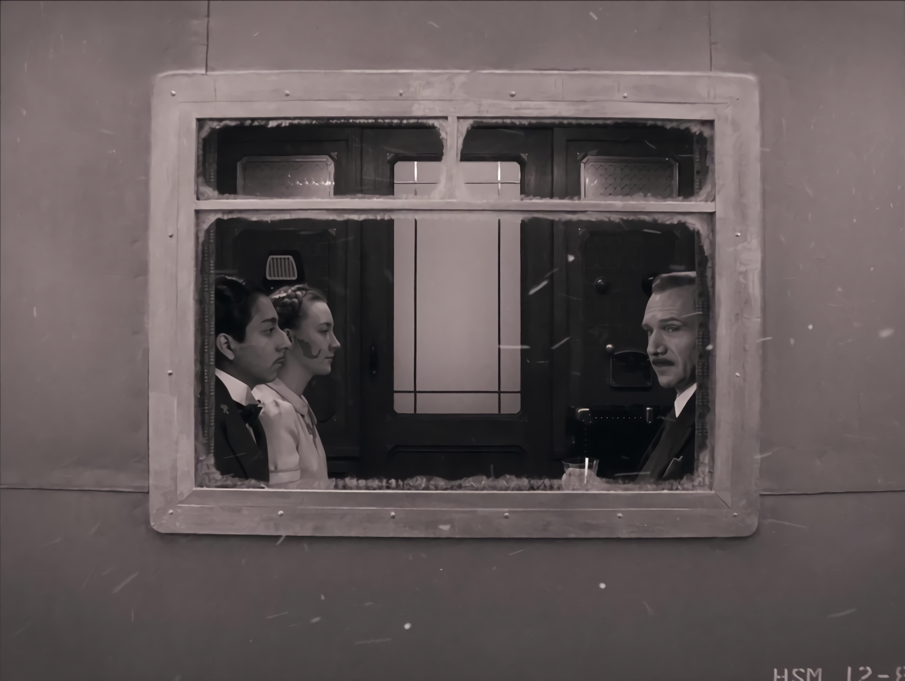
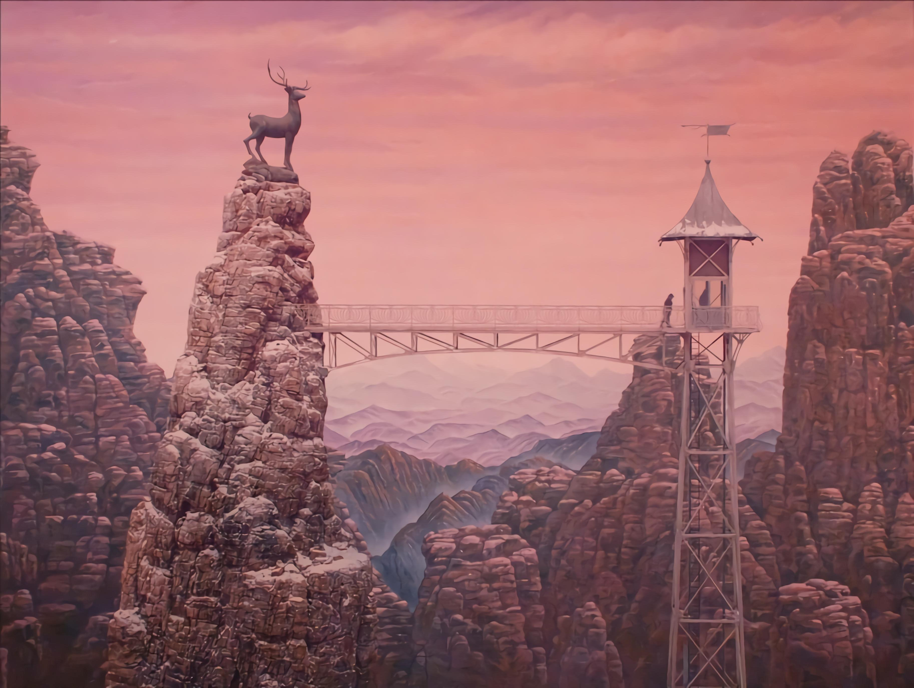
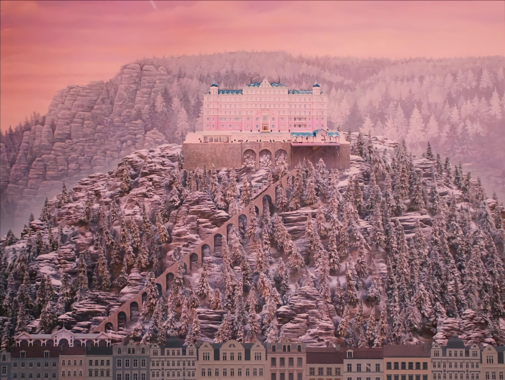

2014, Comedy/Crime, English
Director: Wes Anderson
Set against the backdrop of a dramatically changing continent, "The Grand Budapest Hotel" recounts the adventures of Gustave H, the legendary concierge at one of Europe's most famous hotels during the 1930s, and Zero Moustafa, the lobby boy who becomes his most trusted friend. This whimsical tale of mystery and friendship unfolds in the fictional Republic of Zubrowka, a European alpine state. The film is a visual masterpiece, renowned for its distinctive style, elaborate set designs, and symmetrical compositions. It's a story filled with intrigue, humor, and the peculiarities of complex characters. Gustave's pursuit to prove his innocence after being framed for murder leads to a series of absurd and delightful events, involving a priceless Renaissance painting and a family's fortune. Anderson's storytelling is both nostalgic and original, creating a cinematic experience that's as charming and intricate as the hotel itself.
I loved the movie for its dream-like scenes and gorgeous colors. It felt like stepping into a different world, both funny and touching at the same time. To me, it's not just a film; it's a piece of art. Wes Anderson really knocked it out of the park with this one, combining a great story with such a unique visual style. Every time I watch it, I find something new to appreciate.